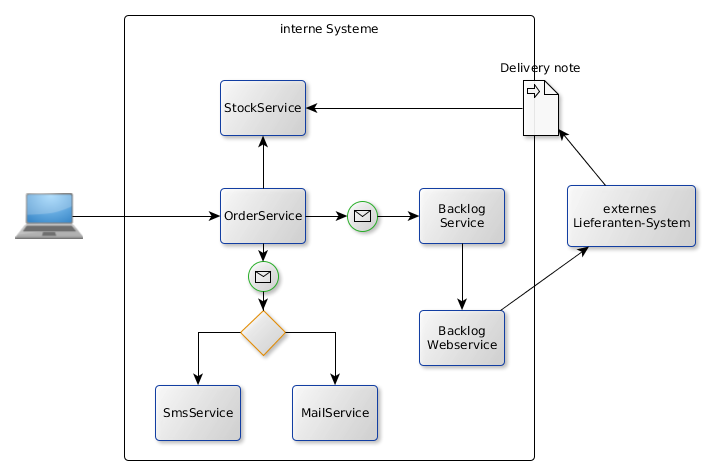

The domain used to demonstrate EIPs with the frameworks is a Bicycle Store.
The bike shop imports CSV delivery notes and orders.

Each delivery note record is converted into a StockItem and sent to the eip.common.services.StockService.addStockItem(StockItem) method. This method increases the number of items on stock for the matching the item number. A delivery note is simple flat CSV file: FRAME; Road bike frame 60 cm;1935182366;103.95;2 DRIVE; Shimano HG LX;1935182439;31.85;6
Spring Integration does not support CSV files so we use Spring Batch for this. The delivery note records are read one at a time, converted into a StockItem to be sent to the StockService.
Camel provides the CSV component. Together with the Split component a record at a time is converted to a StockItem (eip.camel.CsvToStockItemProcessor) and sent to the StockService.
An order consists of a header(record type 'ORDER') and and items(record type 'ITEM')
ORDER;Bike support;1
ITEM;FRAME;Road bike frame 60 cm;1935182366
ITEM;DRIVE;Shimano HG LX;1935182439
All order items until next order block begins are read and mapped to an Order object. The Order object is sent to the eip.common.services.OrderService.handleOrder(Order) method. The availability is queried from eip.common.services.StockService.getStockItem(String). If available the number on stock is decreased, if not the method eip.common.services.BacklogService.orderBacklogItems(Backlog) is called to add an entry in the database table BACKLOGITEM.
Again, Spring Batch does the heavy lifting. As the records has to be aggregated - read an ORDER, read all ITEM's until another ORDER or end of file the FlatFileItemReader is wrapped in eip.spring.integration.OrderFlatFileItemReaderDelegate.
The Split component splits on the token "ORDER", and feeds the ORDER and its ITEM's to eip.camel.CsvToOrderProcessor.